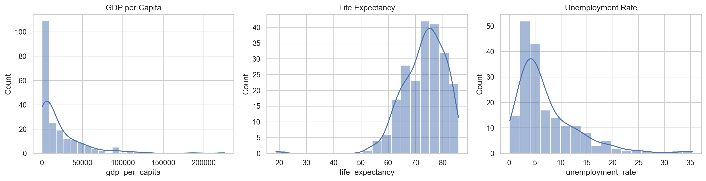
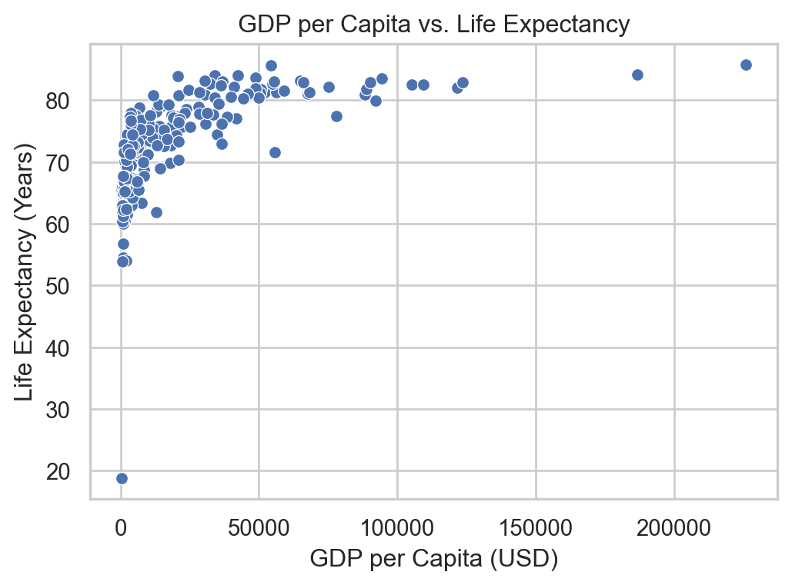
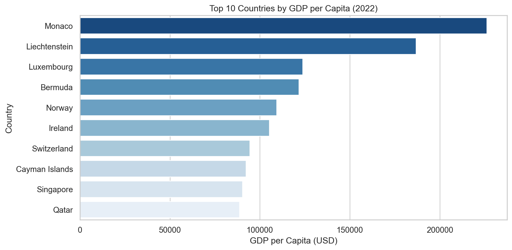
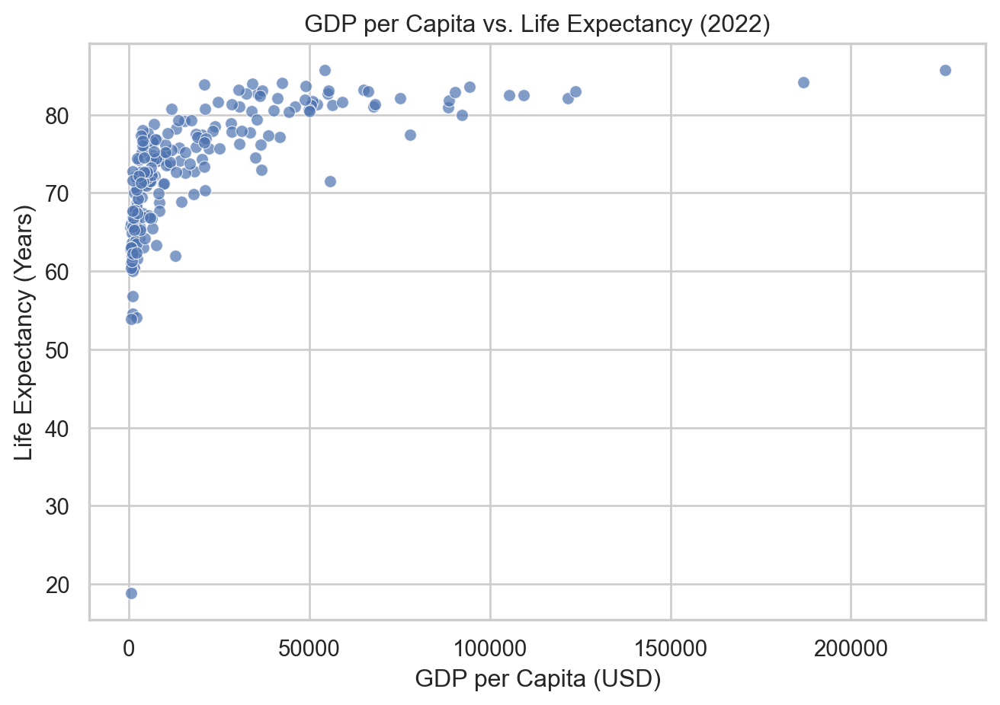
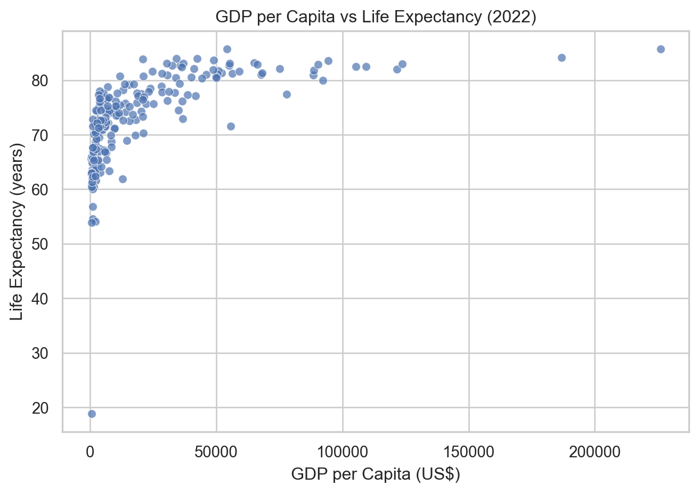
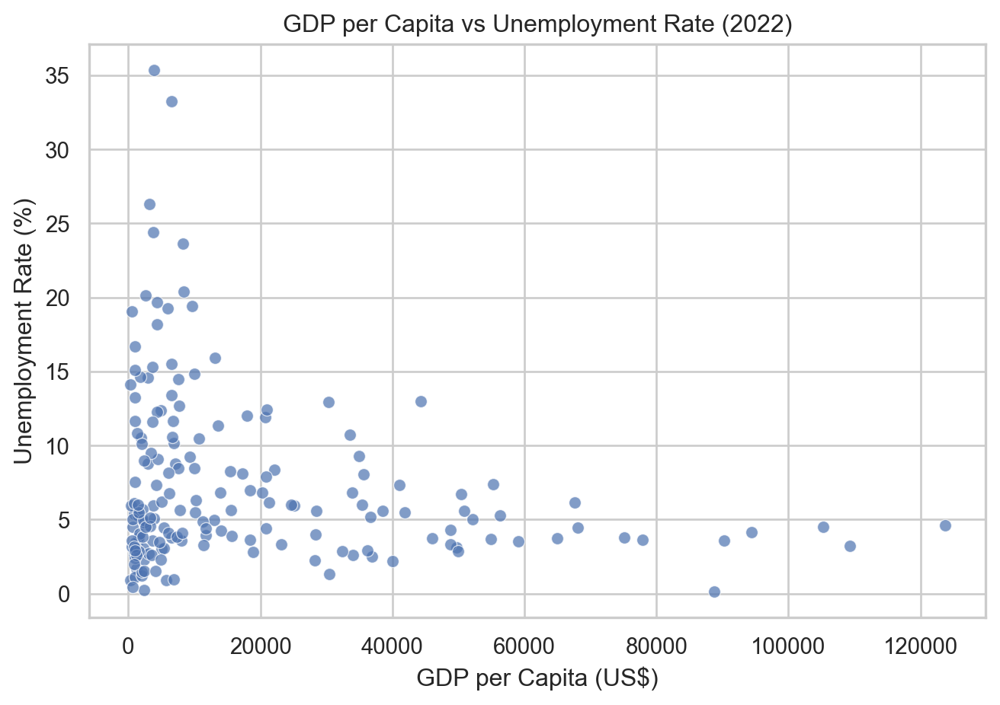

GDP per Capita · Life Expectancy · Unemployment (WDI, 2022)
• Dataset snapshot
• Visual summaries
• U.S. vs. world
• Key takeawaysThree indicators were analyzed from the World Development Indicators (2022): 1. GDP per Capita (US$) 2. Life Expectancy (years) 3. Unemployment Rate (%)
• GDP per capita: The distribution is heavily right-skewed, showing that while a few countries have exceptionally high income levels, the majority remain far below the global average. This imbalance highlights the persistent gap between high-income economies and developing regions, with small advanced economies (like Luxembourg or Singapore) pulling up the global mean.
• Life expectancy: Most countries cluster between 65–80 years, reflecting global progress in healthcare and living standards. The tight spread indicates that, despite economic inequality, longevity has improved worldwide — though outliers with lower life expectancy often correspond to regions affected by conflict or limited healthcare access.
• Unemployment rate: The distribution is slightly right-skewed, with most nations maintaining moderate unemployment levels (under 10%) and a handful exceeding 15–20%. These high-outlier cases often represent economies facing structural challenges or recovery from shocks such as the COVID-19 pandemic.

• Global income is heavily concentrated among a handful of advanced economies, where small, finance and trade-driven nations like Luxembourg and Switzerland far surpass the global average.
• This pattern underscores how wealth reflects economic specialization and productivity, not population size revealing persistent inequality in global prosperity.

• Higher income generally leads to longer life expectancy, reflecting how wealth improves access to healthcare, education, and living standards.
• However, the curve flattens at high income levels, showing diminishing returns once basic needs are met, further economic growth yields smaller health gains, and progress depends more on equity and system efficiency.
• Wealthier nations generally experience lower unemployment rates, reflecting stronger economic stability, higher labor demand, and more developed job markets.
• Yet, the relationship is not uniform — unemployment also depends on policy choices, labor flexibility, and economic cycles, meaning even rich countries can face volatility during recessions or structural transitions.
Summary • The United States combines extremely high income and low unemployment with one of the most productive economies in the world. • However, its life expectancy lags behind other high-income nations, highlighting inefficiencies in healthcare access, cost, and equity despite vast economic resources.
| Indicator | United States | High-income average | Global average |
|---|---|---|---|
| GDP per capita (US$) | 77,860.91 | 69255.110000 | 21175.310000 |
| Life expectancy (years) | 77.43 | 81.280000 | 73.110000 |
| Unemployment rate (%) | 3.65 | 4.640000 | 7.230000 |
Overall, the analysis shows that higher national income is strongly associated with better health outcomes wealthier countries tend to enjoy longer life expectancy and greater economic stability. However, the benefits of income growth taper off among already affluent nations, where additional wealth brings smaller gains in longevity. Likewise, low unemployment alone does not guarantee stronger health outcomes, as broader social factors such as healthcare access, preventive care, and system efficiency play a far greater role. Ultimately, sustainable improvements in well-being depend not merely on economic expansion, but on how effectively countries convert their resources into equitable, accessible, and high-quality health systems.
Citations: • PwC Economic Outlook (Q1 2023) ((PwC) 2023) • WHO World Health Statistics 2023 (Organization 2023) • IMF World Economic Outlook 2024 (Fund 2024)